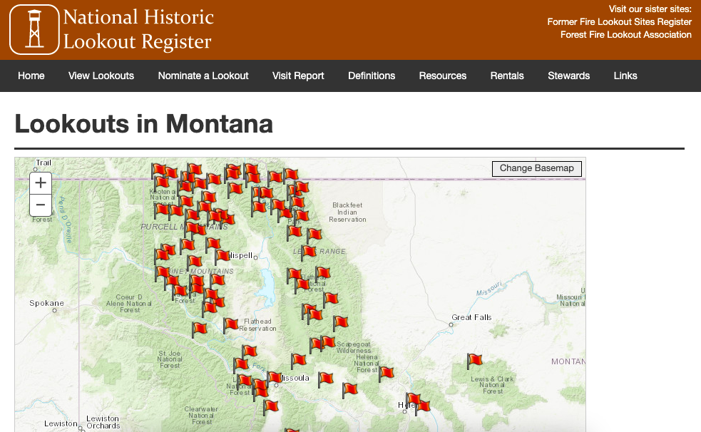
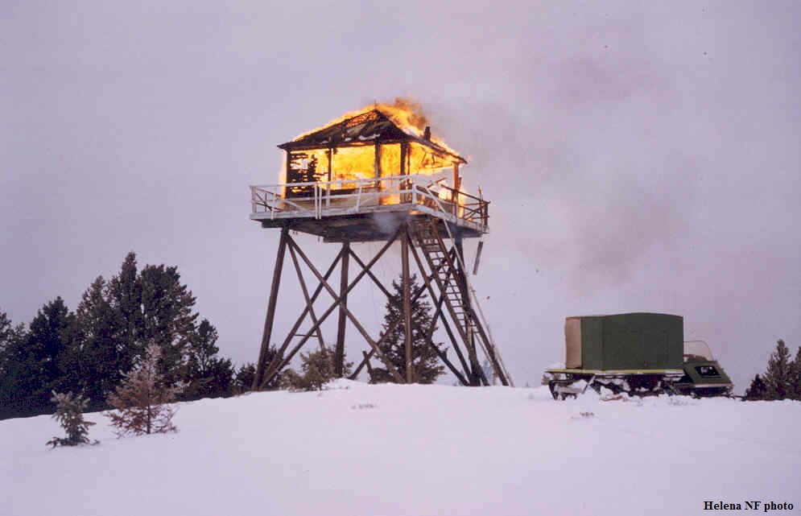
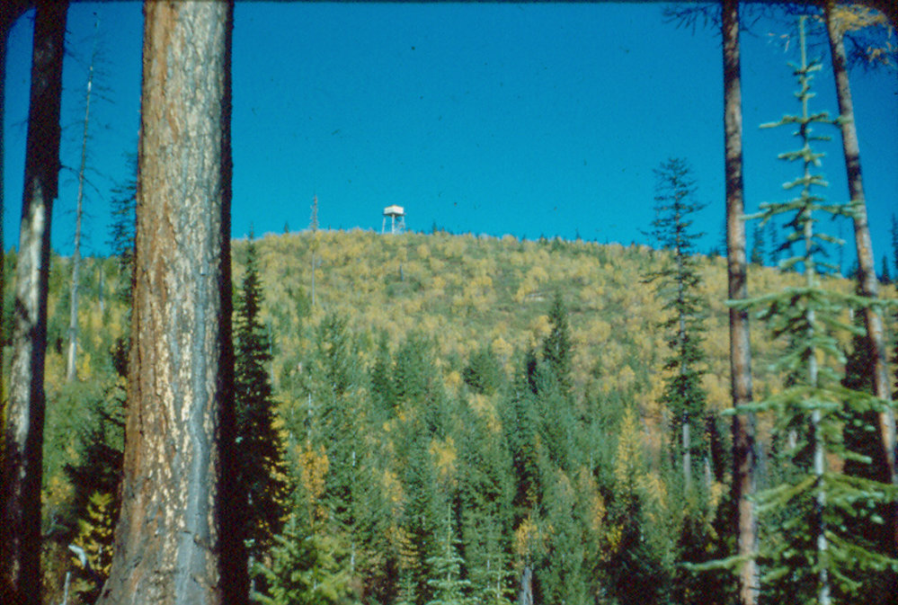
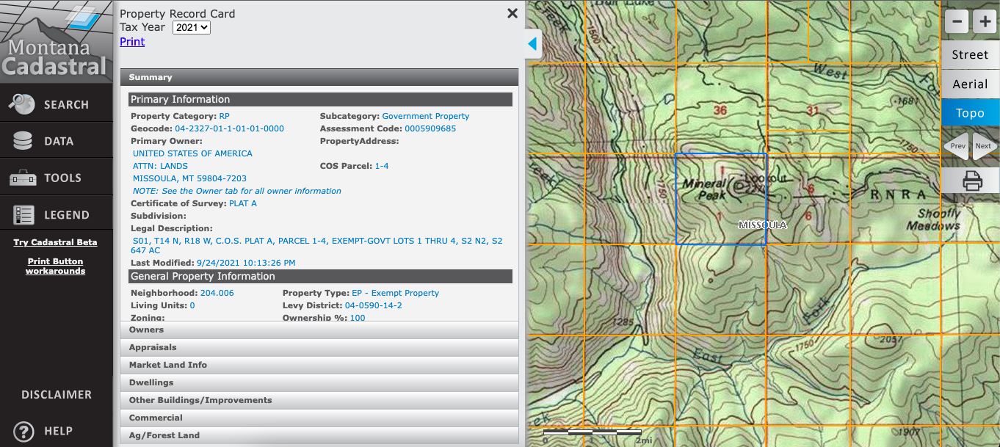

Before aviation was used as a means of fire detection, the Forest Service had a robust network of fire lookouts. While regularly staffed lookouts still exist, they are rare. Finding your way to a lookout is a unique experience within our National Forests. Below you will learn how to find, prepare for, and summit a fire lookout.
A suggested order of operation:
Before we can narrow our search, let's use a combination of online resources (such as the below maps and registry) and topo maps to find where lookouts were (and reportedly still are).
The below table gives some ideas for around Missoula, MT
| Name | Year Built | Forest | Location | Elevation | |
|---|---|---|---|---|---|
| St. Mary Peak | 1953 | Stevenville Ranger District | 46.5116°N, 114.2444°W | 7,326 ft | |
| Mineral Peak | 1957 | Missoula Ranger District | 47.0035°N, 113.8131°W | 7,447 ft | |
| Pistol Creek | 1970 | Flathead Reservation | 47.2144°N, 114.0292°W | 6,126 ft | |
| Skookum Butte | 1928 | Lolo National Forest | 46.6646°N, 114.3949°W | 7,215 ft |
With the introduction of aerial detection, lookouts started to become obsolete. Since then, lookouts have either been abandon, destroyed, or restored. Making sure your journey leads to a structure (and not a pile of debris) is essential. Use a combination of photos and Google Earth to help determine if your journey is worthwhile.
Above is a photo of the Dalton Mountain Lookout being decommissioned by the Forest Service. Beside the photo is satelite imagery of the tower location. Use the 3D function to scout the summit for a structure. As you can see, the lookout is gone. What's worth noting: if the summit is not under canopy, the views are still probably fantastic!
Lookouts are steeped in history. Delve into library archives and see if you can find information or anecdotes about the 100 year old structures. Below, Bud Moore recounts what he knows of Mocus Point Lookout in the Lochsa District.
Sometimes land around lookouts have been sold, making access difficult. First, locate your lookout on the Montana Cadastral Map (hint: zoom in close enough to use the topo basemap). The map will have details about landowners. It is advisable to call to ask for permission to access their land.
Another resource is CalTopo's public land overlay. The feature color-codes the map to denote public, state, BLM, Tribal, and private land.
Now that you have an idea of where to go and what to expect, it's time to get moving. Pack appropriate layers, bring food & water, and let someone know where you'll be going. Have fun, find solitude, and step back in time.